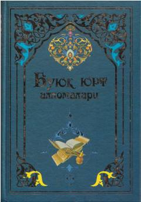

BYO'zbekiston zaminidan yetishib chiqqan buyuk allomalar va mutafakkirlarning hayoti hamda ilmiy merosiga bag'ishlangan asar.
Ushbu kitobda O'zbekiston zaminidan yetishib chiqqan, islom dini, ma'rifati va madaniyati taraqqiyotida ulkan rol o'ynagan buyuk allomalarning hayoti va ilmiy faoliyati yoritilgan. Manbalarga tayangan holda yozilgan mazkur to'plam tariximizning yorqin sahifalarini ochib beradi. Kitobxonlarni ajdodlarimizning ilmiy merosi bilan tanishtirishga bag'ishlangan.